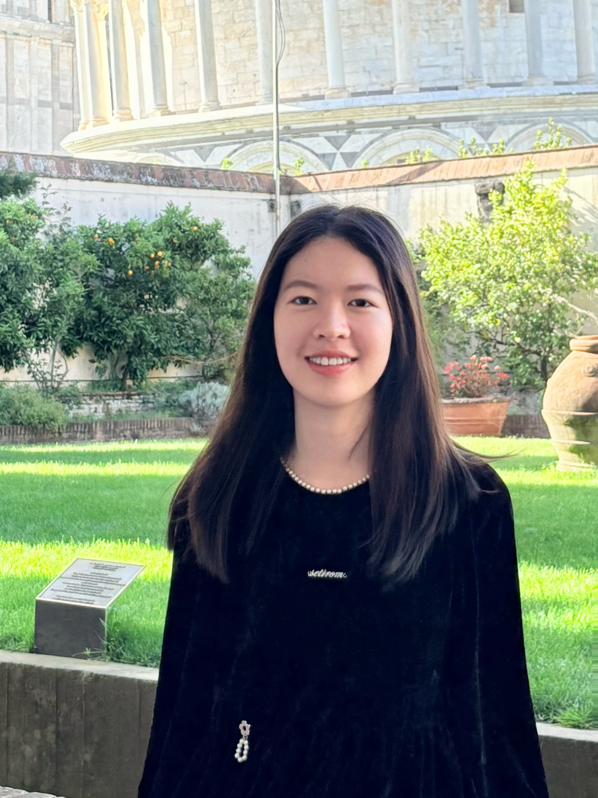

Hello, I'm
PhD Student in Management @HKUST (2026-Present)
My research interest centers around how organizations and individuals are shaped by—and respond to—their social and institutional environments. I am particularly interested in how legitimacy is contested, how inequality is produced or disrupted, and how actors adapt when their environments shift. Drawing on institutional theory, gender, and social evaluation perspectives, I study these dynamics in contexts such as entrepreneurship, venture capital, and legacy industries.
